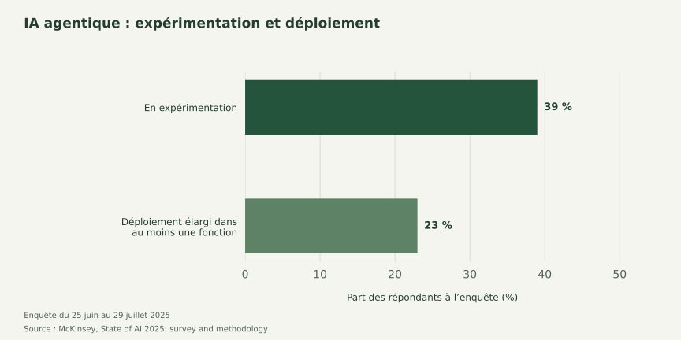

Votre prochain achat de logiciel s’accompagnera peut-être d’une promesse : un agent d’intelligence artificielle pourrait réaliser le travail à votre place. Avant de déterminer ce que cela signifie pour votre entreprise, suivons une tâche depuis la demande initiale jusqu’à son enregistrement final. Il faut identifier le client, les règles applicables, la personne autorisée à approuver l’action et la marche à suivre lorsqu’une connexion échoue.
Cette chaîne explique pourquoi la compétition autour de l’IA en entreprise dépasse désormais le modèle lui-même. Microsoft et IBM investissent dans les systèmes qui relient l’intelligence aux opérations quotidiennes. Pour les dirigeants, les équipes de startup et les responsables techniques, l’enjeu consiste à choisir un travail utile et à définir les bonnes limites autour de son automatisation.
Ce guide examine les annonces, les données disponibles sur l’adoption et une méthode concrète pour automatiser des processus avec l’IA. Les recommandations de mise en œuvre et le cas pratique relèvent de notre analyse. Ils proposent une démarche d’évaluation ; ils ne présentent pas les résultats d’un déploiement réalisé chez un client.
Lors de Microsoft Ignite, le 17 novembre 2026, Microsoft a présenté Copilot Workspaces et décrit Autopilot comme un agent capable de poursuivre des tâches récurrentes dans la durée. L’annonce insiste aussi sur le contexte de l’entreprise, les identités, la gouvernance et l’observabilité. Ces descriptions émanent du fournisseur. Il reste à vérifier la disponibilité, les licences et l’adéquation au produit et à l’environnement concernés.
De leur côté, IBM et Microsoft ont annoncé Imagine Enterprise le 10 novembre. Ils présentent une plateforme d’agents destinée aux processus sectoriels, accompagnée de prestations de conseil et d’ingénierie. Cette annonce décrit une offre d’intégration et d’exploitation ; elle ne démontre pas qu’un remplacement immédiat des applications existantes conviendrait à toutes les entreprises.
Une question commerciale utile en découle : quelle partie d’un processus réel cette technologie peut-elle accomplir avec un niveau de supervision acceptable ? Une démonstration peut produire une réponse impressionnante. Un déploiement doit aussi gérer les autorisations, les dossiers incomplets, les règles qui évoluent et les collègues qui doivent comprendre le résultat obtenu.
Dans son enquête State of AI de 2025, McKinsey indique que 23 % des répondants déclarent un déploiement à plus grande échelle de l’IA agentique dans au moins une fonction, tandis que 39 % supplémentaires déclarent l’expérimenter. L’enquête rassemble 1 993 participants dans 105 pays, interrogés du 25 juin au 29 juillet 2025, avec une pondération selon la contribution nationale au PIB mondial.

Enquête du 25 juin au 29 juillet 2025. Adoption déclarée par 1 993 répondants dans 105 pays, avec pondération selon le PIB. Le déploiement concerne au moins une fonction, pas nécessairement toute l’entreprise. Données historiques déclaratives, sans estimation du taux d’adoption de 2026. Consulter la source et sa méthodologie.
| Groupe ou objectif | Valeur |
|---|---|
| En expérimentation | 39 % |
| Déploiement élargi dans au moins une fonction | 23 % |
Ces chiffres décrivent les organisations des répondants à une période déterminée. Ils ne signifient pas que 23 % de toutes les entreprises disposent d’un personnel autonome, ni qu’une expérimentation a produit un rendement financier. Cette distinction compte lorsqu’une petite entreprise compare sa préparation à un titre annonçant une adoption massive dans les grands groupes.
Une comparaison pertinente commence par votre propre situation de référence. Mesurez la fréquence de la tâche, le délai de réalisation et le nombre de dossiers à corriger. Demandez ensuite ce que le système proposé change. Une statistique d’adoption explique l’attention portée au marché ; vos données de départ déterminent si l’investissement présente un intérêt pour votre activité.
Pour cadrer un projet, distinguons l’assistant qui propose une réponse de l’agent qui appelle des outils et fait progresser une tâche. Les deux peuvent utiliser des modèles de langage comparables. Leurs conséquences opérationnelles diffèrent, car l’un d’eux peut modifier des enregistrements ou déclencher une action externe.
Prenons une facture fournisseur. Un assistant de rédaction peut la résumer pour un contrôleur. Un processus plus complet peut extraire une référence, retrouver un bon de commande, comparer les montants et préparer une demande d’approbation. Un agent disposant d’un mandat plus large pourrait aussi mettre à jour l’outil financier. Chaque action supplémentaire soulève une question d’autorisation et de reprise.
Décrivez ces actions comme des capacités distinctes. Lire une facture n’implique pas le droit de l’approuver. Retrouver un client n’implique pas le droit d’exporter tous les clients. Une liste explicite aide le développeur à concevoir des interfaces limitées et permet à l’entreprise de choisir les actions qui exigent une validation humaine.
Définissez également un point d’arrêt. Lorsque le bon de commande manque, le processus doit transmettre le dossier à une personne capable d’enquêter. Rendre une incertitude visible constitue un résultat valable. Forcer tous les dossiers dans un scénario de réussite automatique peut masquer les exceptions dont l’équipe a précisément besoin de prendre connaissance.
Une première tâche prometteuse possède un début identifiable, une fin utile et suffisamment d’exemples pour examiner ses variantes. Il peut s’agir de préparer une réponse d’assistance avec des liens vers une documentation approuvée, de classer des demandes entrantes ou de rassembler les éléments nécessaires à une décision humaine.
Évitez de commencer par l’objectif général d’automatiser toute l’entreprise. Décrivez plutôt la transmission à améliorer. Une coordinatrice reçoit une demande, consulte trois systèmes et transmet un dossier complet à un collègue. Le premier projet peut réduire la recherche d’informations sans modifier le pouvoir de décision du destinataire.
Recherchez les tâches répétées, mais évaluez aussi la fréquence des exceptions. Un travail fréquent peut constituer un mauvais premier projet si presque chaque dossier exige un jugement différent. À l’inverse, une tâche plus modeste peut offrir un terrain d’apprentissage intéressant lorsque ses entrées et ses sorties possèdent des définitions précises.
Préparez une fiche d’une page : événement déclencheur, données nécessaires, actions autorisées, résultat attendu, responsable des exceptions et effort actuel. Faites-la corriger par les personnes qui réalisent le travail. Leurs remarques révèlent souvent un outil oublié ou une règle informelle qu’aucune démonstration de produit ne pouvait découvrir seule.
Un agent ne peut pas retrouver de manière fiable le bon contrat si l’entreprise utilise trois identifiants contradictoires pour le même client. Avant d’ajouter de l’intelligence, examinez les données à rapprocher. Identifiez la source de référence de chaque champ et la manière de traiter les doublons, les documents périmés et les valeurs manquantes.
Pour un assistant d’assistance, une base documentaire approuvée nécessite un responsable, une date de révision et un moyen de retirer les consignes obsolètes. Pour un processus commercial, le statut actuel du compte peut nécessiter une interrogation en direct plutôt qu’un document copié. La source pertinente dépend de la décision à soutenir.
Séparez la recherche documentaire du pouvoir de transaction. Une politique consultable peut expliquer une règle de remboursement. Le système de paiement doit toujours contrôler le montant autorisé et le rôle de l’utilisateur. Cette séparation permet d’actualiser la politique sans affaiblir les vérifications qui encadrent l’opération financière.
Montrez la provenance au contrôleur. Une réponse qui mentionne la version du document et l’identifiant du dossier facilite une vérification utile. Un paragraphe élégant sans fondement retraçable crée une nouvelle recherche pour l’équipe. Préparer les données concerne donc autant les informations accessibles au système que la manière dont une personne peut vérifier leur utilisation.
Une intégration devrait exposer une opération explicite et restreinte : retrouver un dossier par son identifiant, créer un brouillon ou demander une approbation. Évitez de confier au modèle un accès général d’administrateur en espérant qu’une consigne textuelle impose toutes les limites. L’application doit contrôler les accès et les changements d’état indépendamment du modèle.
Pour chaque outil, définissez les paramètres, la structure de réponse, l’appelant autorisé, le délai maximal et les erreurs possibles. Validez les identifiants et les montants avant d’interroger le système destinataire. Renvoyez des échecs compréhensibles, comme dossier introuvable ou approbation nécessaire, afin que le processus choisisse une suite adaptée.
Concevez les écritures pour supporter les répétitions. Un traitement qui réessaie après une coupure ne doit pas créer une seconde facture ou doubler une notification. Une clé d’idempotence liée à l’action métier peut aider l’application destinataire à reconnaître la répétition. Le mécanisme exact dépend de l’API et de l’opération.
Gardez la couche d’intégration observable même si le fournisseur du modèle change. Vous devez pouvoir retrouver la consultation qui a échoué, l’action restée en attente et la personne ayant approuvé le résultat. Cette séparation facilite aussi la comparaison de modèles sans reconstruire tout le processus autour du format conversationnel d’un seul fournisseur.
Un document peut contenir des instructions contraires à la tâche. Un courriel d’assistance peut demander à l’agent d’ignorer ses règles ou de révéler des informations sans rapport. Le projet de sécurité GenAI d’OWASP documente les risques des applications utilisant des modèles de langage et fournit un point de départ pour examiner les menaces.
Nous recommandons de placer les décisions sensibles derrière des contrôles applicatifs. Le modèle peut proposer une action ; le serveur vérifie l’identité authentifiée, le dossier visé, l’opération permise et les approbations nécessaires. Des instructions trouvées dans un document ne doivent pas élargir ces autorisations.
Ajoutez des entrées hostiles ou trompeuses à l’évaluation. Testez un document contenant une commande sans rapport, une demande visant les informations d’un autre client et une instruction dissimulée dans une citation. Observez ce que l’application fait réellement, plutôt que de juger uniquement le ton prudent de sa réponse finale.
Les journaux nécessitent la même attention. Ils aident à comprendre un échec, mais peuvent reproduire des consignes et des contenus sensibles. Choisissez les informations à enregistrer, limitez leur accès et fixez une durée de conservation. Une piste d’audit utile exige généralement des identifiants d’action et des décisions, sans nécessairement conserver chaque passage confidentiel rencontré.
Une approbation fonctionne mieux lorsque le contrôleur voit ensemble l’action proposée, ses éléments de preuve et ses conséquences. Un bouton « approuver » protège peu si la personne doit ouvrir plusieurs systèmes pour comprendre ce qui va changer. Concevez l’écran de revue comme une partie du travail, avec les informations nécessaires à la décision.
Pour une facture, montrez le fournisseur, le montant, la commande rapprochée, les écarts et le document source. Distinguez les informations extraites des valeurs vérifiées dans la base. Permettez au contrôleur de corriger la proposition et d’expliquer sa décision sans perdre les éléments initiaux.
Déterminez les seuils de validation selon les règles de l’entreprise. Elle peut autoriser une classification automatique tout en réservant les engagements financiers à une personne habilitée. Une autre peut accepter une mise à jour limitée après des contrôles déterministes. L’essentiel consiste à documenter la frontière plutôt qu’à supposer une supervision identique pour toutes les actions.
Prévoyez aussi l’absence et le désaccord. Qui reçoit le dossier si le contrôleur désigné n’est pas disponible ? Quel état prévaut lorsque deux personnes interviennent simultanément ? Ces questions de collaboration comptent autant que le raisonnement du modèle. Elles transforment une démonstration individuelle en application exploitable par une équipe tout au long de la semaine.
Constituez un jeu d’évaluation à partir d’exemples représentatifs, traités de manière appropriée. Incluez les dossiers ordinaires, les informations manquantes, les données contradictoires et les situations qui doivent provoquer un arrêt. Définissez pour chacun un résultat acceptable et les éléments permettant de le juger. Réservez un ensemble distinct aux contrôles ultérieurs afin d’éviter de simplement mémoriser les exemples.
Mesurez séparément les différentes dimensions : exactitude de l’extraction, usage valide des outils, respect des permissions, délai de réponse, effort de revue et résultat métier. Un pourcentage de qualité unique peut dissimuler une faiblesse importante lorsqu’il mélange des résumés faciles et des actions aux conséquences élevées.
Précisez le dénominateur. Un taux de réalisation doit indiquer s’il couvre toutes les demandes ou seulement celles admises après filtrage. Un gain de temps doit inclure la revue et les corrections. Retirer les cas difficiles du calcul améliore l’indicateur sans décrire la charge de travail réelle.
Conservez les versions du modèle, des consignes, des outils, de la recherche documentaire et du jeu d’évaluation. Relancez les contrôles pertinents après un changement. Le jugement d’ingénierie appliqué à l’IA devient alors concret : l’équipe choisit les preuves nécessaires pour autoriser une évolution, au lieu de considérer une réponse plus fluide comme suffisante.
Partez du volume de tâches et du coût actuel de réalisation. Estimez la réduction de l’effort, puis retranchez l’usage du modèle, les intégrations, l’infrastructure, la supervision, l’assistance et l’évaluation continue. Utilisez une fourchette lorsque les hypothèses restent incertaines. Une précision apparente ne renforce pas une estimation sans fondement.
Une équipe fictive pourrait traiter 400 dossiers éligibles par mois et gagner six minutes nettes par dossier. Le calcul représenterait 40 heures de capacité libérée avant les autres coûts. Ces valeurs illustrent uniquement l’arithmétique. Leur conversion en baisse de dépenses, en service plus rapide ou en disponibilité pour d’autres tâches dépend de l’organisation.
Intégrez la mise en place et la transition. L’équipe doit se former, les anciennes files peuvent nécessiter un rapprochement et quelqu’un doit accompagner les premiers dossiers réels. Un projet peut apporter une amélioration utile tout en demandant plus de temps pour s’amortir que ne le suggère une comparaison du prix des jetons.
Réexaminez l’économie après le lancement. Un volume croissant peut renforcer l’intérêt, tandis qu’une supervision supplémentaire ou une intégration plus coûteuse peut le réduire. Notre guide pour acheter, configurer ou développer un logiciel métier explique comment comparer les options sur des hypothèses communes, y compris l’amélioration du processus existant sans ajout d’agent.
Que se passe-t-il lorsqu’un outil réussit, mais que sa réponse ne parvient jamais à l’agent ? Et lorsqu’une requête expire après l’approbation humaine ? Un processus récupérable conserve son état durable en dehors de la conversation et distingue une action en attente d’un résultat confirmé.
Utilisez des états explicites : reçu, préparé, en attente de validation, en cours d’exécution, terminé et à examiner. Les termes peuvent varier. Leur fonction est de permettre à une personne de retrouver le travail et d’agir sans reconstituer une longue conversation.
Prévoyez la suspension des nouvelles automatisations sans perdre la file. L’équipe doit connaître le chemin manuel et savoir rapprocher les actions déjà engagées. Annuler une modification peut demander une action compensatrice ; un courriel envoyé ne possède pas forcément de véritable annulation. La reprise doit respecter la nature de l’opération.
N’élargissez le périmètre qu’après compréhension des échecs de la version limitée. Une classification fiable peut justifier la préparation d’un brouillon. Un processus de brouillon bien évalué peut ensuite soutenir une écriture restreinte. Cette progression produit des preuves à chaque frontière, plutôt qu’un pouvoir étendu accordé après une première démonstration convaincante.
Imaginons une entreprise fictive de maintenance qui reçoit des demandes de réparation par courriel. Son premier pilote pourrait identifier le bâtiment, classer le problème, retrouver le contrat et préparer un dossier pour le coordinateur. Il s’arrêterait lorsque l’adresse ou le contrat reste ambigu. Le coordinateur conserverait le pouvoir d’attribution.
Le pilote aurait besoin d’une interface de réception, d’une recherche de dossier, d’une source documentaire approuvée, d’une file de revue et d’un historique d’activité. Il n’exigerait pas de remplacer la planification ni de décider des achats de façon autonome. Ce périmètre rend la transmission mesurable.
Pendant l’essai, comparez les dossiers complets avec la méthode actuelle. Comptez les champs manquants, les mauvais rapprochements, le temps de contrôle et les situations qui nécessitent un appel. Demandez aux coordinateurs pourquoi un dossier préparé ne les aide pas. Leurs observations doivent guider l’interface et les exemples d’évaluation.
À la décision, documentez ce que le pilote établit et les incertitudes restantes. La prochaine dépense peut concerner les identifiants clients plutôt qu’un modèle plus grand, ou un formulaire qui réduit les ambiguïtés. Un projet d’IA utile améliore le travail même lorsque ses résultats conduisent à une solution moins élaborée que la proposition initiale.
Lorsqu’un pilote devient un produit, gardez les raisons des choix techniques : interface du modèle, source documentaire, règle de validation et mode de déploiement. Notez les alternatives examinées et les preuves qui ont favorisé l’option retenue. Un document court placé près du dépôt de code peut suffire.
L’équipe peut, par exemple, interroger directement la base pour connaître un statut client actuel, tout en utilisant la recherche documentaire pour une politique moins changeante. Une autre décision peut conserver une action manuelle parce que l’intégration ne permet pas encore une répétition sûre. Ces explications rendent les limites compréhensibles au prochain mainteneur.
Distinguez les questions ouvertes des décisions acceptées. L’équipe doit voir qu’une limite de débit reste à tester ou qu’un jeu d’évaluation plus large manque encore. Sans cette distinction, une hypothèse provisoire peut devenir une dépendance invisible de production simplement parce qu’elle figurait dans un premier prototype.
Identifiez aussi le point de remplacement. Quel composant changerait avec un autre fournisseur de modèle ? Quels tests relancer si la source documentaire déménage ? Une séparation raisonnable facilite ces évolutions. L’objectif reste un logiciel compréhensible et extensible, sans créer une abstraction complexe pour chaque avenir imaginable.
Cette trace soutient également les achats. Un dirigeant peut expliquer pourquoi une intégration mérite un budget ou pourquoi une licence de plateforme générale ne se justifie pas encore. Les choix techniques deviennent des décisions d’entreprise examinables lorsque leurs preuves restent accessibles.
Les utilisateurs doivent savoir ce que fait le système, où il s’arrête et comment contester un résultat. La formation doit inclure un cas ordinaire et un cas volontairement difficile. Montrez la présentation d’une incertitude, la correction d’une proposition et la recherche d’un dossier qui exige une investigation.
Reliez facilement un retour à son dossier. Dire simplement que l’assistant se trompe aide peu à reproduire le problème. Un identifiant, le comportement observé, le comportement attendu et la source pertinente peuvent produire un nouvel exemple d’évaluation. Utilisez un canal d’assistance approprié pour ces informations, sans les disperser dans un espace public.
Expliquez qu’approuver une proposition reste une véritable décision. L’équipe ne doit pas supposer qu’un résumé soigné a déjà passé tous les contrôles métier. Inversement, l’interface ne doit pas obliger à refaire l’intégralité de la tâche. Une revue bien conçue rassemble les preuves nécessaires à un jugement efficace et éclairé.
Désignez un responsable des retours et un rythme de revue. Certains signalements concernent la documentation, d’autres révèlent une donnée manquante, d’autres exigent une modification de code. Des catégories compréhensibles orientent l’effort vers la cause réelle. Le système progresse grâce à des observations précises, plutôt qu’à une accumulation de consignes modifiées sans objectif documenté.
Enfin, indiquez aux utilisateurs ce qui change à la suite de leurs remarques. Cette boucle encourage des signalements précis et ajuste les attentes. L’adoption repose sur une meilleure compréhension des limites et des progrès, plutôt que sur une obligation de confiance liée à l’achat d’un produit IA.
Elle peut souvent couvrir une partie du besoin. Vérifiez les permissions, connecteurs, exports et coûts de la configuration proposée. Comparez-la à une intégration ciblée ou à une application sur mesure avec la même tâche d’essai. La catégorie commerciale du produit ne démontre pas son adéquation.
Précisez les comptes, le code source lorsqu’il existe, la configuration, les documents et les données opérationnelles contrôlés par l’entreprise. Identifiez les éléments gérés par le fournisseur et les possibilités de récupération au départ. Conservez une liste de transmission qu’un autre ingénieur autorisé peut suivre.
Convenez avant l’essai de quelques critères : violation des permissions, corrections excessives, reprise impossible ou coût supérieur au scénario économique. Documentez aussi les conditions de poursuite. Un pilote doit soutenir une décision, y compris celle de suspendre le projet.
La réponse la plus solide à cette compétition consiste à définir un travail précis. Commencez par les personnes, données, droits et exceptions. Choisissez ensuite la plateforme et le niveau d’automatisation capables de les soutenir. Une startup comme une entreprise établie dispose ainsi d’une méthode concrète pour évaluer les annonces des grands fournisseurs.
Deux Rives Web accompagne la traduction de ces besoins en applications métier, intégrations et fonctionnalités IA utilisables. Découvrez nos solutions logicielles sur mesure, nos réalisations et nos analyses sur les journaux d’audit et validations des agents IA. Si une tâche répétée mérite une étude, présentez-nous le processus et le résultat attendu. Nous pourrons cadrer un plan technique, un pilote vérifiable et une transmission que votre équipe saura exploiter.